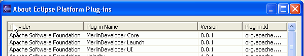

|
|
You can download the binary installation of MerlinDeveloper here.
To install MerlinDeveloper through our downloadable .zip file, please proceed with the following steps:
Extract the content of the .zip archive 'MerlinDeveloper_[version].zip'
into directory $ECLIPSE_HOME$/plugins, where $ECLIPSE_HOME$ is the directory where
Eclipse is installed.
In Windows, this is usually C:\Eclipse
First open the "About Dialog".
 |
Select the menu item Help > About |
Please press Plug-in Details button in About dialog.

Now you should see this list:

If you don’t see those MerlinDeveloper Plug-ins in the list: